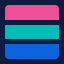
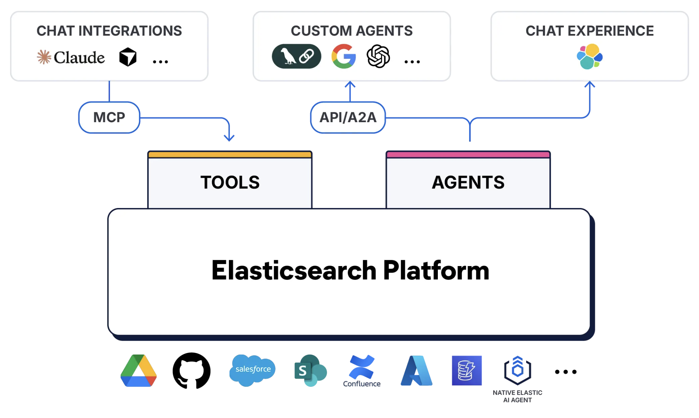

Elastic Agent Builder
for Enterprise Use Cases
Build, deploy, and scale production-grade AI agents — from retrieval to orchestration — powered by the Elastic AI Search platform trusted at enterprise scale.
Principal Solutions Architect — Search Specialist
The Elastic Search AI Platform
All Your Data, Real-Time, At Scale
Accelerate mission outcomes by finding insights from any data source

ElasticsearchOne Platform
Search, Observability, and Security unified on a single data layer
Any Deployment
Self-managed, cloud-hosted, or fully serverless — your choice
Real-Time Insights
From ingestion to action in milliseconds, at petabyte scale
The Search Maturity Model
Search didn't jump from keywords to AI. It evolved in five distinct stages — each solving the limitations of the last.
Keyword Search
Exact term matching. Fast and predictable. The foundation of web search for 20+ years.
Limitation
No understanding of meaning. "automobile" won't find "car". Vocabulary mismatch kills recall.
Semantic Search
Embedding models encode meaning into vectors. "car" and "automobile" land nearby. Understands intent, not just words.
Limitation
Loses precision on exact terms, names, codes. Struggles with structured or boolean queries.
Hybrid Search
Best of both worlds. Fuses keyword precision with semantic recall. ELSER adds learned sparse representations. RRF merges rankings.
Limitation
Returns documents, not answers. Users still read and synthesize results manually.
Conversational RAG
LLM generates answers grounded in retrieved context. Conversational memory rewrites follow-ups. Users get answers, not links.
Limitation
Read-only. Can answer questions but can't take actions, call APIs, or chain multi-step workflows.
Agentic AI
Agents reason, plan, and act. Retrieve context, call tools, delegate to other agents, execute multi-step workflows autonomously.
Current frontier
Requires robust retrieval, tool orchestration, guardrails, and observability. This is where Elastic plays.
Key insight: Each stage builds on the previous — you can't skip steps. Agentic AI without solid retrieval is just expensive hallucination. The maturity model is cumulative, not a replacement.
Elastic Playground
UI for building and testing RAG applications without writing code.

Core Modes
- Chat mode — conversations with context retrieval
- Query mode — test and refine ES queries
LLM Flexibility
- Elastic Managed inference
- OpenAI, Bedrock, Azure, local
- Swap models per iteration
Advanced Features
- View & modify ES queries in real-time
- Export Python code for your app
- A/B test models & retrieval strategies
Memory & Context
- Conversational memory rewrites follow-ups
- Session state across turns
- No manual prompt engineering
Requirements
Elasticsearch v8.14+, one index with data, LLM provider credentials (Elastic, OpenAI, Bedrock, Azure, or local)
Most Agents Break After Three Turns
The bottleneck is never the model. It's always the context.
- LLMs can reason. They can't remember.
- Stuffing 200k tokens into a prompt isn't a strategy
- Agents need the right context at the right time
- Retrieval isn't a feature — it's the foundation
- Without search, your agent is expensive autocomplete
while (true) {
const response = await llm(
`${entire_knowledge_base}` +
`${all_chat_history}` +
`${user_message}`
)
// $4.20 per turn
// 12 second latency
// still hallucinates
}
Elastic Agent Builder: Build Once. Connect Everywhere.
Chat Integrations via MCP → Tools. Custom Agents via API/A2A → Agents. Native Chat Experience → Elastic UI. All on the Elasticsearch Platform.

Chat + Agents + Tools
Chat
Interactive playground to test & iterate. Connect an index, pick a model, test retrieval.
Agents
Custom LLM instructions + toolsets. Define behavior, assign tools, set guardrails.
Tools
Actions your agent can take — built-in Elastic tools, custom tools, or MCP imports.
Tool Types
POST /api/agent_builder/tools { "id": "find_client_exposure", "type": "esql", "description": "Finds client portfolio exposure to negative news", "configuration": { "query": "FROM news_index | ..." } }
POST /api/agent_builder/agents { "id": "financial_assistant", "name": "Financial Assistant", "instructions": "You are a specialized data assistant...", "tools": [ "find_client_exposure" ] }
POST /api/agent_builder/converse { "agent_id": "financial_assistant", "input": "Which clients are most at risk from bad news this week?", "conversation_id": "..." }
Import Any MCP Tool Into Your Agent
How It Works
- Stack Management → Connectors → New MCP
- Point to any remote MCP server URL + auth
- Auto-discovers tools via
listTools - Assign discovered tools to any agent
What This Unlocks
- Incident management via PagerDuty MCP
- Code search & PRs via GitHub MCP
- Messaging via Slack, Teams MCP
- Knowledge bases via Confluence, Notion MCP
Bidirectional Power
- Elastic serves its own tools as an MCP server
- Claude, Cursor, Copilot can call Elastic tools
- Cross-platform agent-to-agent orchestration
- Any MCP client gets Elastic search + security
Elastic Workflows
Native automation engine that combines predictable execution with AI agent reasoning — directly where your data lives.
Agent + Workflow Integration
Add any workflow as a tool in Agent Builder. Agents invoke workflows based on user intent — combining AI reasoning with deterministic, repeatable execution. No integration gap between reasoning and action.
Why This Matters
Agents reason. Workflows execute. Together: restart a service, update a record, send a notification, triage an alert — all from a single conversation. Automation where your data lives.
Build Once. Expose Everywhere.
Your Elastic Agent connects to the world through three protocols — each optimized for a different integration pattern.
Claude
Cursor
VS Code
LangChain
Gemini
Strands
MS Foundry
Any Agent
Apps
Backend
CI/CD
Workflows
Three Patterns. One Platform.
Start simple. Evolve as your use case demands. The same retrieval and inference stack powers all three.
Simple RAG
User asks a question → retrieve context → LLM generates grounded answer.
Agentic RAG
Agent reasons about the query → decides which tools to call → retrieves, acts, responds.
Multi-Agent (A2A)
Orchestrator delegates to specialist agents via A2A. Each agent owns a domain.
Progressive complexity: Start with Pattern 1 in Playground today. Graduate to Pattern 2 with Agent Builder + Tools. Scale to Pattern 3 with A2A. Same platform, same data, same security model throughout.
One API. Every Model You Need (/_inference)
Fully managed, GPU-accelerated. Swap models per step. Unified inference API across all providers.
Register & Use Any Model
{
"service": "elastic",
"service_settings": {
"model_id": "openai-gpt-4.1"
}
}
Jina SOTA Multilingual Embeddings. Native on Elastic.
v5-text-small — 677M params
Highest scoring multilingual model under 1B parameters. Matches jina-v4 (3.8B) at 5.6x smaller.
v5-text-nano — 239M params
Matches all sub-500M models including KaLM-mini-v2.5 (494M).
Why This Matters
- 5.6x smaller than v4 — same quality
- Native on EIS — zero infra setup
- GPU-accelerated, fully managed, auto-scaling
- Multilingual out of the box
- Works with vector search and hybrid search
Setup — 4 Lines
{
"service": "elastic",
"service_settings": {
"model_id":
"jina-embeddings-v5-text-small"
}
}
An Agent Without Context
Is Just Expensive Guesswork
Every use case we just covered depends on one thing: getting the right information to the agent at the right time. That's not a model problem. That's a search problem.
Without Context
Stuffing 200k tokens. $4+ per turn. 12s latency. Still hallucinates.
With Context Engineering
Right docs, right time. Sub-second retrieval. Grounded answers with citations.
Elastic Provides Everything You Need
Context Engineering — from data prep to retrieval to agentic AI to evaluation
Data Prep & Inference
- Sparse & dense vector encoding models
- Multi-lingual embedding models
- Multi-modal embedding models
- GPU-based inference service
- Automatic chunking
- 200+ connectors
- Web crawlers
- Automated parsing
- Quantization
Retrieval
- Vector search
- Lexical search
- Hybrid search
- Geospatial search
- Filtering & faceting
- Reranking models
- Learning to rank (LTR)
- Query rules & rescoring
- Query understanding models
- RAG Workflows
- LLM integration
Agentic AI
- Tool building
- Agentic workflows
- Tool selection
- Memory systems
- Prompt management
- MCP/Agent interfaces
Evaluation & Monitoring
- Relevance benchmarking
- A/B testing
- Behavioral analytics
- Cost & token tracking
- Query logging, metrics, tracing
Three Search Methods. One API (_search)
Elastic's retrieval pipeline goes beyond vector search — three phases that progressively refine results for maximum relevance.
Multi-Method Search
Business Logic Layer
Semantic Precision
Query Your Data Without the JSON Pain
ES|QL is Elastic's piped query language — familiar syntax, powerful transforms, and native integration across the entire stack.
Before — JSON Query DSL
{
"query": {
"bool": {
"filter": [
{ "term": { "status": "error" }},
{ "range": { "@timestamp": {
"gte": "now-24h"
}}}
]
}
},
"aggs": { "by_service": {
"terms": { "field": "service.name" }
}}
}
After — ES|QL
| WHERE status == "error"
AND @timestamp > now() - 24 hours
| STATS count = COUNT(*)
BY service.name
| SORT count DESC
3 lines vs 18 lines. Same result. Readable by anyone.
Two Layers of Access Control
Control what agents can do through tool assignment, and what data users can see through Elasticsearch security — two independent layers working together.
Tool-Based Access Control
Agents only access the tools assigned to them. No tool = no access to that data or action. Many-to-many relationship.
Index / Field / Document Security
When a tool queries Elasticsearch, the data-layer security kicks in — filtering results based on user roles and permissions.
How they work together: An agent can only call its assigned tools (Layer 1). When a tool runs a search, Elasticsearch enforces index/field/document-level permissions for that user (Layer 2). Two independent layers — no single point of bypass.
Turn AI Agents Into Elastic Experts
What is SKILL.md?
The open agentskills.io standard. Each skill is a folder with a SKILL.md file — structured metadata + instructions. When an AI agent reads it, it learns how to perform Elastic tasks correctly — right APIs, right patterns, right guardrails.
26 Skills Available
- Elasticsearch — Search, indexing, ES|QL, auth, audit, file-ingest, troubleshooting
- Kibana — Agent-builder, alerting, audit, connectors, dashboards, streams, vega
- Observability — LLM-obs, logs-search, SLOs, service-health
- Security — Alert triage, case mgmt, detection rules, sample data
- Cloud — Access mgmt, create/manage projects, network security, setup
Works With

What You Can Build With Vibe Coding + Elastic Skills
Describe what you want in plain English. Elastic Agent Skills handle the rest — correct APIs, correct config, correct best practices.
"Build me a hybrid search API"
Creates index mapping, sets up ELSER, configures hybrid search with RRF, writes API endpoint — following Elastic best practices.
"Create an APM dashboard"
Builds full observability dashboard — service maps, latency charts, error panels, SLO tracking. Correct APIs, correct JSON.
"Set up brute force detection"
Creates EQL/ES|QL detection rules, configures alert actions, sets severity and risk scoring correctly.
"Build a RAG agent for our docs"
Sets up ingestion, creates vector index, configures inference, builds agent in Agent Builder — end-to-end in one conversation.
"Why is my cluster yellow?"
Checks shard allocation, identifies unassigned shards, diagnoses root cause, applies fix — all through correct ES APIs.
"Ingest my Kafka logs"
Configures Fleet integration, sets up ingest pipelines with grok processors, creates index templates, verifies data flow.
github.com/elastic/agent-skills — Open source. Apache 2.0. Contribute your own.
Agents for Regulated Industries
Where compliance is non-negotiable. Elastic gives you data sovereignty, audit trails, and granular access control out of the box.
BFSI
- Fraud investigation — transaction patterns + compliance rules via hybrid search
- KYC document retrieval — scanned docs in minutes, not days
- Compliance Q&A with citations and audit trails
Public Sector
- Citizen services — navigate permits, benefits in plain language
- Policy research — legislation via hybrid search, not keyword
- On-prem, air-gapped, FedRAMP-ready deployment
Healthcare
- Clinical decision support — indexed medical literature with citations
- Document-level security for HIPAA compliance
- Risk assessment with ES|QL aggregations
Key differentiator: Data-layer security (index/field/document level), on-prem deployment, auditable retrieval trails. Your data stays where compliance requires.
Agents for Every Business
From IT help desks to shopping assistants — the same platform scales across every commercial use case.
Mid-Market
- IT support — resolves L1/L2 from runbooks + past resolutions
- HR policy assistant — multi-language via Jina v5
- Incident response — correlates logs, metrics, traces automatically
Digital Natives
- Developer docs agent — search by intent, get right code snippet
- In-product search — users self-serve via REST API or MCP
- Log analysis — "why did deploy-42 fail?" with ES|QL
E-Commerce
- Shopping assistant — semantic intent + price filters in one query
- Personalization — behavioral signals + product vectors
- Returns & support — multi-language, MCP-connected logistics
200+ connectors — Confluence, SharePoint, Google Drive, ServiceNow, Salesforce. Federate all your data through one agent.
LLM Observability — Built In, Not Bolted On
Your agents are only as good as your ability to monitor them. Elastic gives you full-stack observability for every agent interaction.
Trace Every Interaction
- End-to-end trace spans for each agent turn
- Tool invocations, retrieval calls, LLM requests
- Latency breakdown per step
- Error propagation and root cause analysis
Cost & Token Tracking
- Input/output tokens per request
- Cost per conversation and per user
- Model comparison (cost vs. quality)
- Budget alerts and anomaly detection
Quality & Safety
- Retrieval relevance scoring
- Hallucination detection signals
- User feedback loops (thumbs up/down)
- Guardrail trigger monitoring
Why this matters: Most agent platforms require third-party tools for monitoring. With Elastic, your agents run on the same platform you already use for logs, metrics, traces, and APM — zero integration gap.
Competitive Landscape
Elastic is the only platform combining search, observability, security, and agent builder with native MCP/A2A support.
| Capability | Elastic | Pinecone / Weaviate | MongoDB Atlas | OpenSearch |
|---|---|---|---|---|
| Hybrid Search (BM25+Vector+Sparse) | Native | ~ Limited | ~ Basic | ~ Partial |
| Learned Sparse (ELSER) | Built-in | No | No | No |
| Agent Builder + Playground | GA | No | No | No |
| MCP + A2A Support | Native | No | No | No |
| Agent Skills (Open Standard) | 26 skills | No | No | No |
| Managed Model Catalog (EIS) | Full | ~ Limited | ~ Some | ~ Basic |
| 200+ Data Connectors | Yes | Few | ~ Some | ~ Fork lag |
| Observability + Security | Unified | No | No | ~ Limited |
One Platform. Three Superpowers.
Search
Hybrid retrieval, model catalog, Jina v5, ELSER. Your agent's knowledge layer.
Observe
Logs, metrics, traces, APM. Monitor agents in production.
Protect
SIEM, endpoint, SOAR. Document-level security. Compliance built in.
Elastic Cloud
14-day free trial. Agent Builder included. Playground for no-code prototyping.
Agent Skills
Install 26 Elastic skills in Claude Code, Cursor, or any agent.
Docs & Community
Quick-start guides, GitHub repos, Elastic Community Slack, Search Labs.
The best agent is the one
your users actually trust.
That starts with the right context, at the right time, from a platform you can inspect, control, and extend.